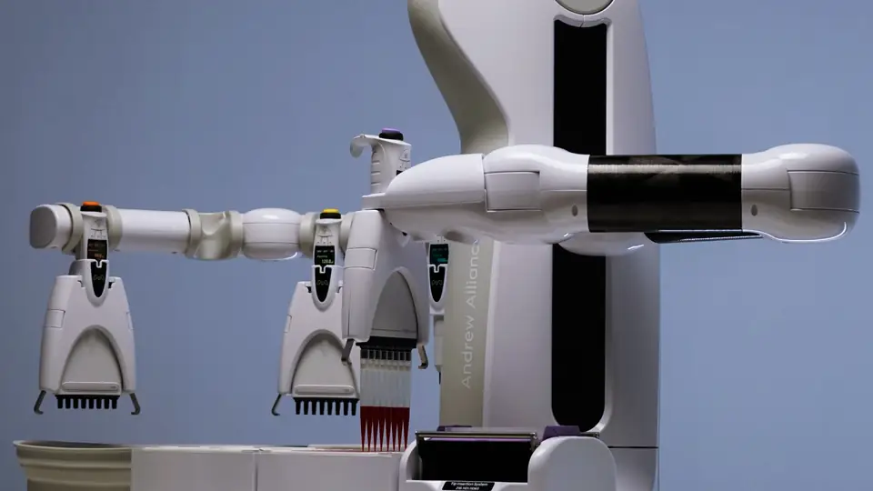
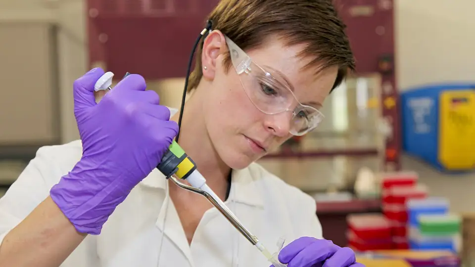

Danaher + NVIDIA: Cosmos world models, BioNeMo and DGX Spark come to the lab bench
Danaher announced Wednesday a collaboration with NVIDIA to integrate AI directly into its scientific instruments, pairing its lab hardware, automation technologies and workflow software with NVIDIA’s accelerated computing — the start, both companies say, of a continuous loop in which experiments feed AI models and models design better experiments.
The deal
The pairing is straightforward: Danaher contributes its scientific instrumentation, automation technologies, laboratory workflow software and domain expertise; NVIDIA contributes accelerated computing and AI technologies. The stated goal is to move researchers faster from prediction to experimental evidence, producing a learning cycle where experiments inform models and models help design better experiments.
The named stack spans edge computing through NVIDIA DGX Spark, accelerated analytics and data processing through RAPIDS, and real-time inference, scientific reasoning and foundation-model technology through BioNeMo Open Models. The companies are also exploring scientific and physical AI — NVIDIA Cosmos world models and Omniverse Digital Twins — to support more intelligent instruments and laboratory workflows. Initial efforts focus on a select group of priority instruments, with the potential to expand across Danaher’s broader portfolio. One notable carve-out: Danaher says customers will stay free to choose their own models, standards and technology providers.

“AI is reshaping how science is conducted, and Danaher is at the forefront of that transformation,” said Julie Sawyer Montgomery, Danaher’s president and CEO, framing the collaboration around “more connected, adaptive and accessible innovation.” NVIDIA’s Kimberly Powell, vice president of healthcare, put the ambition more bluntly: “The next era of scientific discovery will be driven by a continuous loop between AI and experimentation” — with the aim, she said, of helping researchers compress discovery timelines “from years to months.”
Danaher showed its hand a week ago
The NVIDIA deal lands one week after Danaher unveiled its first AI-powered autonomous lab, based at Abcam, a Danaher company. That lab combines technologies from Danaher operating companies Beckman Coulter Life Sciences, Cytiva, Genedata, Integrated DNA Technologies and Molecular Devices in one connected workflow, with device orchestration and robotic automation from Automata — which, Danaher disclosed, received a Danaher investment back in January 2026.
The lab’s loop is the concrete version of Wednesday’s pitch: AI designs new affinity reagents, including antibodies; the lab builds and tests each candidate; every result feeds back to improve the next design. Danaher claims up to 8x faster discovery of affinity reagents and a tenfold increase in annual reagent generation — from tens to hundreds of reagents per year as the lab scales — with the facility expected to operate at scale in early 2027. The company framed it as the first step of a broader program: instruments designed to integrate and be controlled programmatically, to produce AI-ready data, and to include expert-level agentic systems that simplify operation and deepen insight.

Why it matters
Most “AI for science” announcements are about models. The binding constraint is the data loop: a model that cannot run an experiment cannot learn from reality. Putting compute and models at the instrument — the DGX Spark-at-the-edge piece — closes that loop exactly where the data is born. NVIDIA has spent the last two years pushing physical AI into factories and robots; scientific instruments are the next substrate, and Danaher owns a large share of the world’s lab benches.
What to watch: which priority instruments get the treatment first, how fast the expansion across the portfolio moves, and whether instrument rivals answer with their own AI stacks. For labs, the pitch is a shorter path from an AI-generated prediction to the experimental evidence needed to act on it — with the instrument vendors, for once, doing the integration work. Markets barely blinked: DHR ticked up 0.07% and NVDA 0.21% on the news.